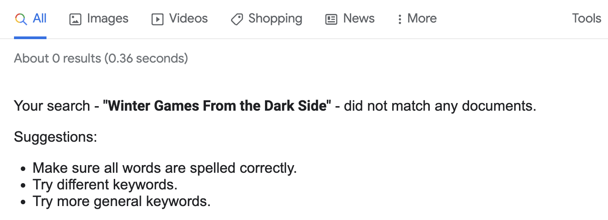

In the lower drawer of a file cabinet in my office is a manila folder labeled “Humor.” In it are printed out emails, clippings from magazines and newspapers, photocopies, and the occasional bumper sticker. This is mostly the work of my late father, whose approach to archiving never transitioned from paper to digital.
Even after I moved away Dad still put clippings in the mail to me. Later, when he was downsizing his archives, I retained a few pieces that I remembered fondly. One of these is “Winter Games From the Dark Side”, a one-page article by Steve Bull that appeared in the January/February 1994 issue of Country Journal, coinciding with the 1994 Winter Olympics at Lillehammer.
Bull, a native of Temple, Maine, devised a series of Olympic events that you could attempt in your everyday life. Examples included “Frozen Pipe Thaw”, in which contestants used household items in an attempt to restoring running water without burning down the house, “Bird Feeder Races”, in which you attempt to fill a bird feeder and return to the house before a squirrel gets it, or “Frost-Heave High Jumps”, in which you hit a frost heave on a county road at 50 miles per high and your airborne distance is measured. I suspect the bird feeder challenge resonated with my father, who once chased a squirrel with a shovel (the squirrel escaped).
I was raised on British-infused absurdist humor like Help! and the The Muppet Show, so the reality-bending nature of this article struck home. Even as an adult, I could remember the title and some of the events, but my attempts to find it online always struck out.

It didn’t help that I misremembered where it was published. I assumed it was in the New Yorker, and picked up a digital subscription mainly to go searching in the archives (to no avail of course). It was a reasonable guess, my parents took the New Yorker in the early 1990s and it’s not the sort of thing you’d find in Newsweek. Thankfully I had the paper copy, which I’ve scanned and run through OCR. I knew my parents took some home-and-hearth publications, but I would never have come up with the titles.
I decided to go looking for Steve Bull, and unfortunately I found him in the obituary section of The Irregular. He died in 2009, at the age of 54. The obituary described his “quick wit, gentle spirit and compassionate heart.” That the obituary encouraged donations to “your local food bank” tells you much about him and his priorities. The Country Journal ceased publication in 2001. Toby Lester, its final editor, called it a “pastoral New Yorker”, which perhaps accounts for my confusion.
As we head into the winter season in the Northern Hemisphere I hope you find Winter Games From the Dark Side as entertaining as I did: